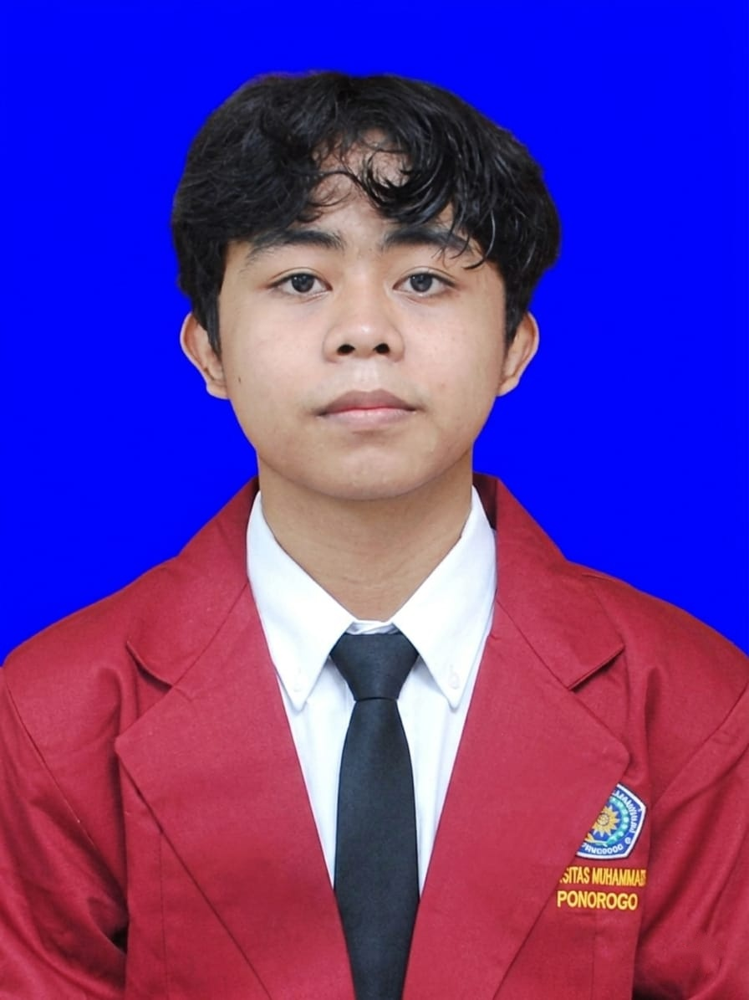

S1 Teknik Informatika, Universitas Muhammadiyah Ponorogo
2025 - sekarang
Mahasiswa Teknik Informatika

Saya mahasiswa Program Studi Teknik Informatika Universitas Muhammadiyah Ponorogo. Berlatar belakang SMK jurusan Teknik Otomasi Industri dan berpengalaman sebagai teknisi maintenance/elektrikal, saya menggabungkan pemahaman sistem kelistrikan dan otomasi dengan minat di dunia pemrograman. Saya terbiasa bekerja dalam tim, cepat menganalisis masalah, dan terus belajar untuk mengembangkan kemampuan di bidang web, robotika, dan jaringan komputer.
2025 - sekarang
2022 - 2025